Drawlib Quickstart Guide
Illustration as Code & Documentation as Code in Pure Python
Drawlib is a pure-Python library designed to bridge technical system design, cloud architecture diagrams, quantitative charts, and publication-grade engineering documentation. Instead of maintaining fragile binary drawings or low-level plotting code, Drawlib enables developers and AI agents to express architecture and workflows declaratively in Python.
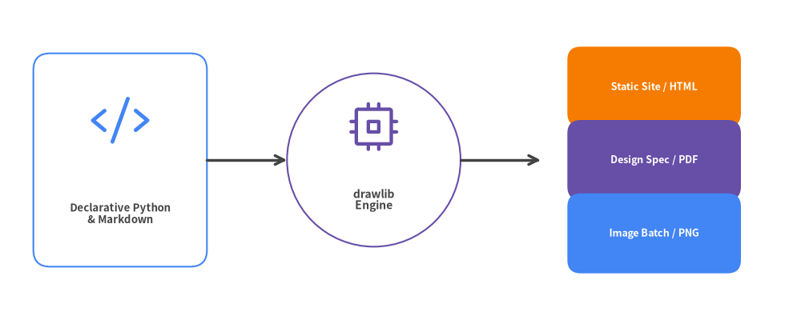
Document Overview & Navigation
This guide serves as a comprehensive handbook for developers and AI agents adopting Drawlib:
- Chapters 1–3: Foundations — Design philosophy, installation, and Cartesian canvas coordinate system.
- Chapters 4–6: Core Primitives & Styling — Shapes, lines, GoogleStyles, fonts, icons, and external images.
- Chapters 7–10: High-Level Graphics — SmartArts components, declarative charts, cloud diagrams, and software models.
- Chapters 11–12: Documentation as Code & CLI — Markdown integration, code fence options, and build automation.
- Chapters 13–15: AI Collaboration & Engineering Practice — Autonomous agent workflows, scaffolding templates, and design rules.
| Document Metadata | Value |
|---|---|
| Document Version | 0.3.4 |
| Theme | GoogleStyles & GoogleColors |
| Source Repository | https://github.com/yuichi110/drawlib |
| Author | Yuichi Ito |
| License | Apache License 2.0 |
1. About Drawlib
Drawlib is a pure-Python library designed to establish "Illustration as Code" and "Documentation as Code" as first-class engineering disciplines. Instead of relying on manual drag-and-drop vector drawing tools that produce opaque binary assets, Drawlib generates crisp, version-controlled diagrams and technical specifications directly from readable Python code.
The Problem with Traditional Diagramming
Modern software teams manage code, infrastructure, and CI/CD pipelines as version-controlled text. Yet technical illustrations are frequently created in GUI tools (draw.io, Figma, PowerPoint, Visio) or complex DSLs:
- Binary or Opaque File Formats: XML/JSON blobs produced by GUI tools cannot be meaningfully reviewed in Pull Requests (
git diff). - Drift and Staleness: As services, schemas, and endpoints evolve, manual diagram updates are neglected, causing architecture documentation to fall out of sync.
- Inconsistent Styling: Without centralized design tokens, each team member uses different fonts, margins, line weights, and arbitrary colors.
- Low-Level Plotting Boilerplate: Tools like matplotlib or raw SVG libraries require hundreds of lines of low-level trigonometry and coordinate math for simple rounded boxes and curved arrows.
Drawlib's Three Architectural Pillars
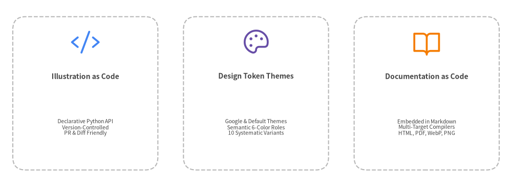
- High-Level Declarative Components: Rather than assembling raw polygons by hand, Drawlib provides pre-engineered modules for cloud architectures (
ArchitectureDiagram), pipelines (ChevronProcess), sequence flows (SequenceDiagram), tables (Table), and charts (BarChart). - Centralized Style Tokens: Themes (
DefaultStyles,GoogleStyles,MonochromeStyles) decouple geometry from presentation. Updating a theme propagates across an entire multi-document project instantly. - Unified Document Compiler: Drawlib embeds directly into Markdown files using
drawlibblocks, building searchable static HTML sites, GitHub-flavored Markdown, and printable PDF books from a single source of truth.
2. Installation & Environment Setup
Drawlib is a modern, pure-Python library requiring Python 3.11 or higher. It integrates seamlessly with modern Python tooling like uv or standard pip.
Package Installation
# Recommended: Using uv (fast, isolated virtual environment)
uv add drawlib
# Or using standard pip
pip install drawlib
Verifying the Installation
After installation, verify that both the Python library and the CLI tool are accessible:
# Check installed CLI version
uv run drawlib --version
# Output: 0.3.4
# Or execute via Python module launcher
python3 -m drawlib --version
Built-in PDF, Office & Image Export
A standard uv add drawlib or pip install drawlib installation includes every output engine out of the box—no optional [pdf] package extras or manual browser setup steps are needed:
- Raster & Vector Images (PNG, WebP, SVG): Supported out of the box via Pillow and Matplotlib backends.
- Headless PDF & 16:9 PowerPoint (
drawlib build pdf,drawlib build pptx): Drawlib uses Playwright with headless Chromium to compile print-ready vector PDFs and measure 16:9 slide layouts for editable.pptxdecks. On your first PDF or PPTX build, Drawlib automatically downloads and caches headless Chromium. - Editable MS Word (
drawlib build docx): Generates editable.docxtechnical specifications directly in pure Python without requiring a browser. - Offline / CI Pre-fetching & Minimal Linux Containers: Pre-download all fonts, icons, maps, and headless Chromium ahead of time for air-gapped CI runners via
uv run drawlib cache download --all(oruv run drawlib cache download --browserfor Chromium only). On minimal Linux Docker containers missing OS shared libraries, install system packages once with:uv run playwright install-deps chromium - Universal Typography: Drawlib automatically fetches and caches CJK-ready Google Noto Sans and Roboto fonts, ensuring Chinese, Japanese, Korean, and Latin typography renders consistently across Linux, macOS, and Windows without missing glyph boxes (
tofu).
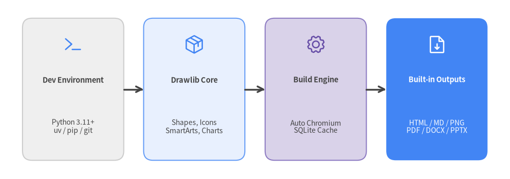
3. Canvas & Coordinate System
Every Drawlib illustration is rendered on a virtual Canvas. Understanding Drawlib's coordinate space is the foundation of creating clear, balanced diagrams.
Cartesian Coordinate Space
Unlike traditional web or GUI coordinate systems where (0, 0) sits at the top-left with a descending Y-axis, Drawlib uses the standard mathematical Cartesian Coordinate System:
- Origin
(0, 0): Located at the Bottom-Left corner of the canvas. - X-Axis: Increases from left to right (
0towidth). - Y-Axis: Increases from bottom to top (
0toheight).
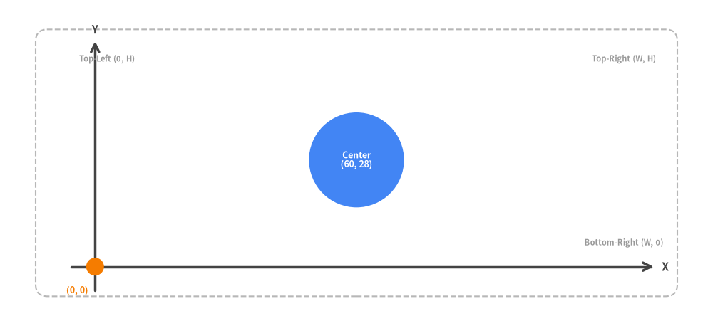
Configuring the Canvas with setup()
Call setup() at the beginning of a drawing script or Markdown block to define canvas dimensions:
from drawlib.canvas import setup
# 120 x 60 coordinate units, high-resolution 150 DPI, visual coordinate grid enabled
setup(width=120, height=60, dpi=150, grid=True)
width/height: Logical coordinate space (defaults to100.0x100.0). Choosing an aspect ratio tailored to your content (e.g.120 x 60for horizontal architectures) prevents letterboxing.dpi: Dots per inch (default100). At100DPI, a canvas of100units renders at1000pxwidth.grid=True: Overlays grid lines every 10 units and coordinate numbers every 20 units. Extremely useful during rapid development to inspect exact alignment.
Alignment & Text Anchors (halign and valign)
Text labels support horizontal (halign) and vertical (valign) alignment configured via style attributes or .patch():
- Horizontal Alignment (
halign):"left","center","right". - Vertical Alignment (
valign):"bottom","center","top".
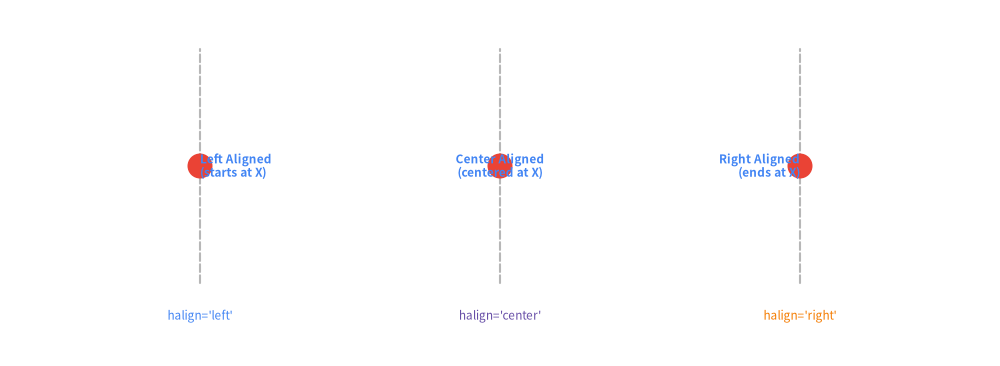
4. Drawing Primitives: Shapes, Lines & Math
Drawlib provides a rich suite of 2D geometric primitives, flexible line connecting algorithms, styled text labels, and geometric math utilities.
Shape Primitives (drawlib.shapes)
Drawlib includes over 20 shape primitives. Every shape supports direct text embedding, corner radius rounding (style.shape_r), rotation (style.angle), and full alignment controls (style.halign, style.valign):
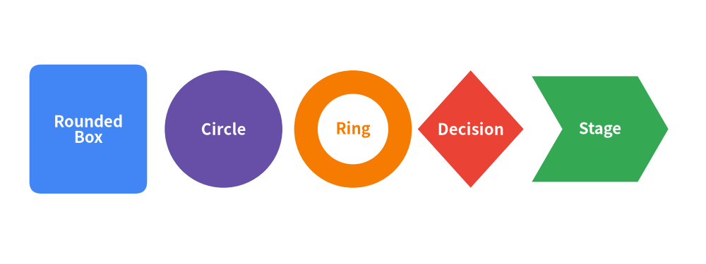
Direct Text Integration in Shapes
In traditional plotting tools, placing a centered label inside a box requires calculating coordinates and issuing separate text calls. In Drawlib, shapes accept text and text_style directly:
from drawlib.shapes import rectangle
from drawlib.styles import Styles
rectangle(
xy=(50, 30),
width=32,
height=18,
style=Styles.PrimaryFlat.patch(shape_r=2),
text="Worker Node\n(Active)",
text_style=Styles.WhiteBold,
)
Connecting Lines & Arrowheads (drawlib.lines)
Drawlib provides straight, curved, bezier, and multi-segment chained lines with customizable arrowheads:
- Arrowhead Styles:
"->"(end),"<-"(start),"<->"(both ends),"-"(none). - Line Functions:
line(xy1, xy2, arrow_head="->", style=...): Straight connection.line_curved(xy1, xy2, bend=0.25, arrow_head="->", style=...): Smooth arc with defined bend curve.line_bezier1(xy1, xy2, cp, ...)/line_bezier2: Bezier paths with control points.lines(xys=[(x1, y1), (x2, y2), ...], ...): Polyline connecting arbitrary waypoints.
[!TIP] Neutral Connectors Principle: Always use
Styles.DarkBold(orStyles.LightBoldon dark backgrounds) for standard sequential lines and arrows. Reserve colors (Styles.Primary,Styles.Accent,Styles.Danger) strictly for meaningful distinctions, such as primary data flows or error rollbacks.
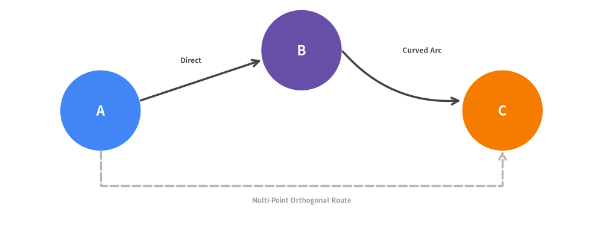
Geometric Math Utilities (drawlib.math)
When computing dynamic layouts or connecting rotated components, use drawlib.math:
get_distance(p1, p2): Euclidean distance between two points.get_angle(p1, p2): Angle in degrees fromp1top2relative to the X-axis.get_center_and_size(points): Bounding box center coordinate(cx, cy)and(width, height)enclosing a collection of coordinates.
5. Styling System: GoogleStyles & Design Tokens
Drawlib decouples visual presentation from geometric drawing logic using a systematic Design Token & Style Matrix. This ensures consistent line widths, colors, borders, and typography across large documentation projects.
Semantic Roles & Style Matrix
Drawlib defines 6 core semantic roles across all color palettes:
| Semantic Role | Typical Architectural Meaning | Google Theme Hex |
|---|---|---|
primary |
Main computation, core services, active state | Google Blue (#4285F4) |
secondary |
Data stores, caches, asynchronous queues | Google Dark Gray (#5F6368) |
accent |
Ingress gateways, external clients, key callouts | Google Amber (#FBBC04) |
muted |
Boundaries, VPC containers, structural lines | Google Light Gray (#DADCE0) |
danger |
Errors, alerts, vulnerabilities, security zones | Google Red (#EA4335) |
success |
Verified status, health checks, completed stages | Google Green (#34A853) |
Each semantic role provides 10 orthogonal style variants:
- Borders & Fills:
bordered(default),flat,solid,light - Outlines:
outline,outline_bold,outline_light - Dashed Lines:
dashed,dashed_bold,dashed_light
Neutral Typography & Connectors Principles
To maintain high contrast and prevent visual clutter:
- Neutral Typography: Text on light backgrounds should always use
Styles.DarkorStyles.DarkBold. On dark fills, useStyles.WhiteBoldorStyles.Light. Avoid coloring body text withStyles.PrimaryorStyles.Secondaryarbitrarily. - Neutral Connectors: Connecting lines and flow arrows default to
Styles.DarkBold. Reserve accent colors (Styles.Primary,Styles.Danger) strictly for meaningful architectural emphasis or error loops.
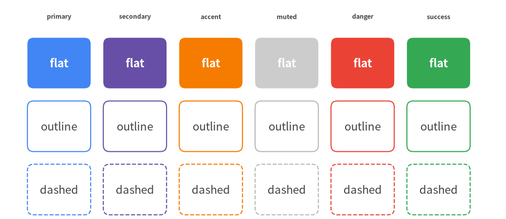
Creating Custom Styles with .patch()
Styles are immutable by design. To derive a variant with modified properties (e.g. customized font size or fill opacity), call .patch() on an existing style:
from drawlib.styles import Styles
# Derive a custom style by modifying specific attributes
callout_style = Styles.AccentFlat.patch(
alpha=0.85,
text_size=11.0,
shape_line_width=1.5,
)
Typography & Universal Fonts (drawlib.fonts)
Typography is a critical component of professional technical diagrams. Drawlib provides CJK/Latin cross-platform font families:
Font: Universal Google Noto Sans family supporting English, Japanese, Chinese, and Korean.FontRoboto: Clean sans-serif optimized for modern UI and cloud architecture documentation.FontMonoSpace: Roboto Mono for code blocks, URLs, and JSON keys.FontFile(path): Custom TrueType/OpenType font files.
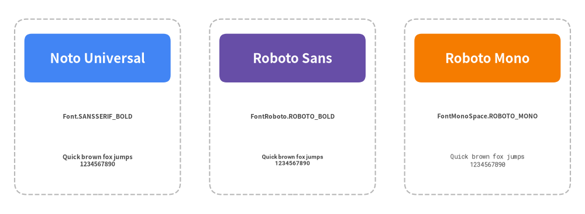
6. Standardized Icons & Media Assets
Diagrams communicate faster when accompanied by standard iconography and project logos. Drawlib bundles extensive vector icon packages under drawlib.icons and provides chainable image transformations via drawlib.images.
Phosphor Vector Icons (drawlib.icons.phosphor)
drawlib.icons.phosphor provides ~1,500 scalable vector icons covering computing, networking, devices, users, interfaces, and tools:
Every icon is a pure Python function accepting xy, width, and style (including style.angle for rotation):
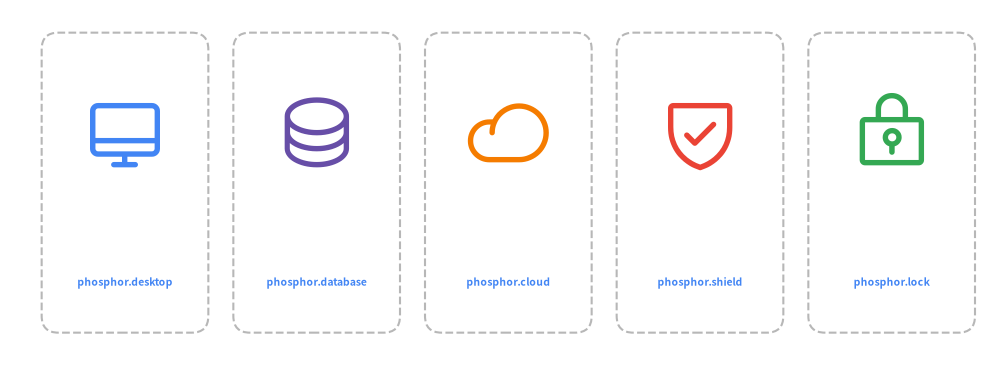
Google Cloud Architecture Icons (drawlib.icons.gcp)
For cloud infrastructure and microservice topologies, Drawlib includes 250+ official Google Cloud icons:
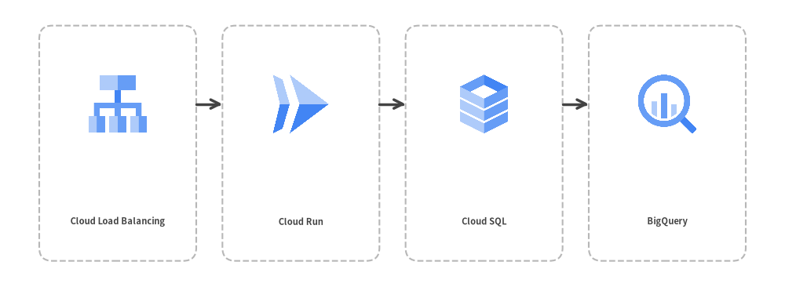
External Media & In-Memory Images (drawlib.images)
Embed external PNG, WebP, or JPEG images with the image() function or transform them via Dimage:
image(xy, width, image=path_or_dimage, style=...): Embeds raster images with optional border styles.Dimage(path): In-memory image representation supporting chainable operations (.mirror(),.sepia(),.crop()).
from drawlib.images import Dimage, image
from drawlib.styles import Styles
# Load external logo, apply horizontal mirror, and render to canvas
mirrored_logo = Dimage("_assets/linux.png").mirror()
image(xy=(50, 30), width=20, image=mirrored_logo, style=Styles.PrimaryOutline)
7. SmartArts: High-Level Visual Components
drawlib.smartarts provides presentation-ready visual layouts inspired by enterprise presentation tools. Instead of assembling dozens of individual shapes and calculating complex offsets by hand, SmartArt components encapsulate layout geometry and item spacing.
Available SmartArt Components
| Component | Anchor Point | Typical Use Case |
|---|---|---|
ChevronProcess |
Bottom-Left (x, y) |
Linear stages, CI/CD delivery pipelines, sequential workflows |
Table |
Top-Left (x, y) |
Service matrices, SLA comparison tables, schema summaries |
TreeNode |
Top-Left (x, y) |
Directory trees, organization charts, package hierarchies |
MindMapNode |
Center (x, y) |
Brainstorming nodes, radial feature maps, architectural taxonomy |
Cycle |
Center (x, y) |
Feedback loops, continuous monitoring lifecycles, SRE runbooks |
Pyramid |
Bottom-Left (x, y) |
Testing pyramids, security tier models, priority hierarchies |
BoxList |
Top-Left (x, y) |
Feature checklists, component listings, vertical card stacks |
BulletPoints |
Top-Left (x, y) |
Bulleted textual summaries, key takeaways, architectural principles |
GridLayout |
Bottom-Left (x, y) |
Uniform grid arrangements, dashboard widgets, matrix cells |
SourceCode |
Top-Left (x, y) |
Syntax-highlighted code blocks with line numbering |
[!NOTE] For pointing speech bubbles and callout annotations, use
bubblespeechfromdrawlib.shapes.
Linear Workflow: ChevronProcess
ChevronProcess creates connected pipeline chevrons with automatic text and description formatting:
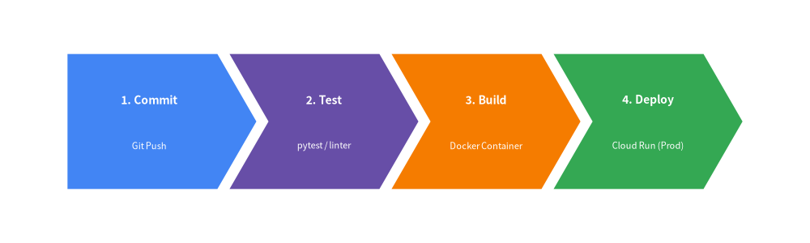
Relational Tables: Table
The Table component draws structured tabular data with configurable headers, alternating row colors, and border separators:
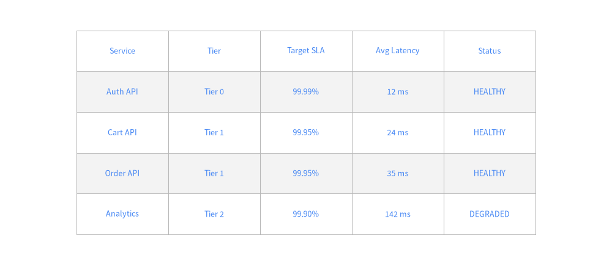
8. Declarative Quantitative Charts
drawlib.charts provides a declarative, vector-grade charting engine directly integrated with Drawlib's canvas primitives. Unlike standalone plotting libraries that output static PNG plots in isolated windows, Drawlib charts can be composed alongside architectural diagrams, callouts, and system annotations on a single canvas.
Supported Chart Types
BarChart: Grouped and stacked bars with vertical or horizontal orientation and optional value labels.LineChart&AreaChart: Continuous trend lines, splines, markers, and filled cumulative areas.PieChart&RadarChart: Proportional slices, donut rings, and multivariate spider web diagrams.ScatterChart: Distribution plots, latency correlations, and cluster maps.GanttChart: Project milestones, sprint roadmaps, and task dependency schedules.
Grouped Bar Chart Example
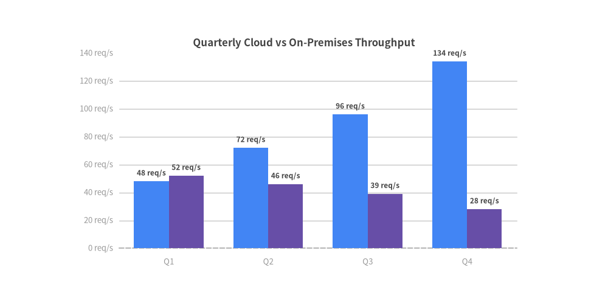
Multi-Series Line Chart Example
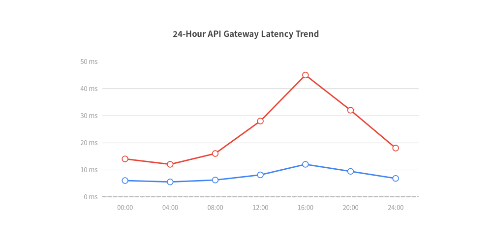
9. Cloud & Distributed Architecture Diagrams
Designing scalable cloud infrastructures, microservices, and distributed topologies is one of Drawlib's primary strengths. Drawlib provides tailored containers, directional network connectors, and standardized vector icons to depict complex systems with clarity.
Blueprint Structure & Boundary Containers
Cloud architecture diagrams follow a standard hierarchy:
- Outer Cloud Boundary / Region: A subtle, dashed boundary container (
Styles.MutedDashed). - Virtual Private Cloud (VPC) / Subnets: Structured network zones separating public ingress from private compute tiers.
- Managed Services & Workloads: High-level icons from
drawlib.icons.gcpordrawlib.icons.phosphor. - Data Flows & Protocols: Directional connectors with protocol labels (
HTTPS,gRPC,SQL).
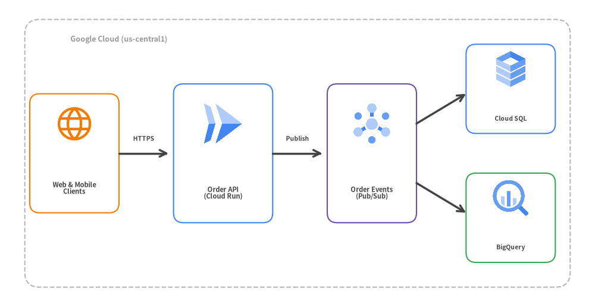
Architectural Guidelines for Cloud Blueprints
- Anchor Primary Services: Place entry points (clients, API gateways) on the left and progress toward data stores on the right.
- Color Discipline: Avoid rainbow diagrams. Use
accentfor entry points,primaryfor services,secondaryfor queues/caches, andmutedfor perimeter network boundaries.
10. Software Design Diagrams
drawlib.diagrams provides specialized, declarative diagramming engines tailored for software architecture, API protocols, workflows, and object-oriented modeling.
1. Sequence Diagrams (SequenceDiagram)
In a SequenceDiagram, participants and lifelines are defined as Python objects. Interactions use clear methods (request(), reply(), note()) with automatic timeline layout:
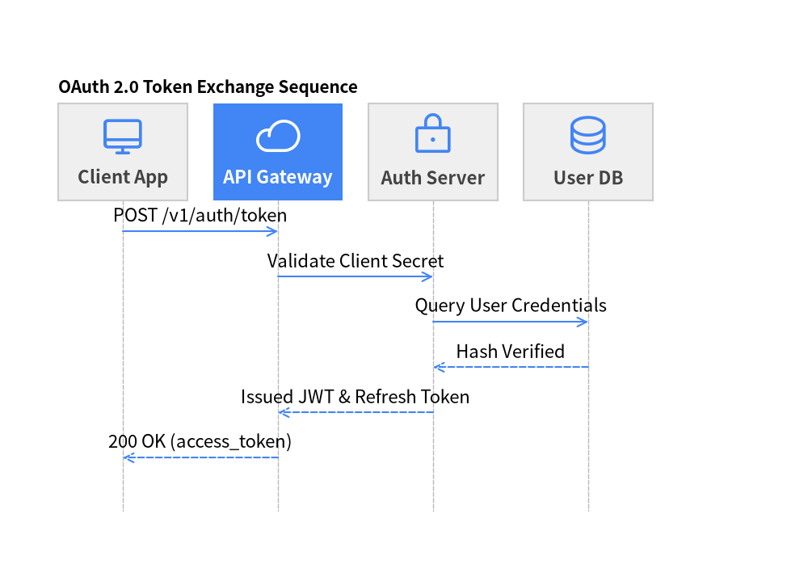
2. Decision & Process Flows (FlowDiagram)
FlowDiagram models logical branching, decision criteria, and workflow stages without manual line coordinate calculations:
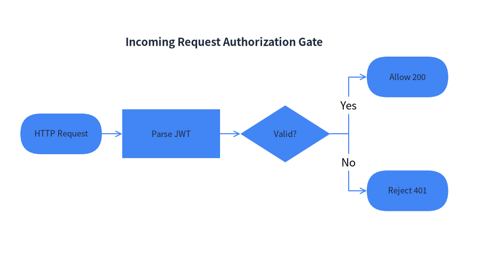
3. Class, State & ER Diagrams
ClassDiagram: Document classes, attributes, methods, inheritance (--|>), implementation (..|>), and associations.StateDiagram: Model state machine lifecycles (InitialState,State,FinalState) with event triggers and guard conditions.ERDiagram: Relational database schemas documenting primary keys (PK), foreign keys (FK), and 1:N cardinalities.
11. Documentation as Code: Embedded Drawlib Blocks
Drawlib unifies technical writing and architectural illustrations into a single, cohesive Documentation as Code workflow. Instead of exporting static PNG files that must be re-uploaded whenever code changes, you embed declarative drawing blocks directly within your Markdown documents.
The drawlib Code Fence
Write diagrams inline within Markdown using the drawlib tag:
# System Architecture
The following diagram illustrates our microservice communication topology:
```drawlib width=600px align=center file=event_microservices.png caption="Figure 1.1: Event-Driven Order Processing"
from drawlib.canvas import setup
from drawlib.shapes import rectangle
from drawlib.lines import line
from drawlib.styles import Styles
setup(width=100, height=40)
rectangle((25, 20), width=30, height=18, style=Styles.PrimaryFlat, text="Publisher", text_style=Styles.WhiteBold)
rectangle((75, 20), width=30, height=18, style=Styles.SecondaryFlat, text="Consumer", text_style=Styles.WhiteBold)
line((40, 20), (60, 20), arrow_head="->", style=Styles.DarkBold)
```
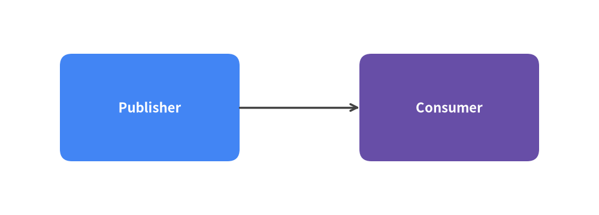
Block Header Options
Drawlib's code fence header accepts flexible options:
| Option Category | Allowed Tokens | Description |
|---|---|---|
| Code Visibility | hide-code (default), show-code, fold-code |
Controls whether Python source is hidden, shown above image, or placed in a collapsible <details> dropdown. |
| Dimensions | 400px, 600px, 100%, w:500 h:300 |
Target display width or CSS dimension string. |
| Alignment | center (default), left, right |
Horizontal image alignment. |
| Figure Caption | caption:"Descriptive title" |
Renders a semantic <figcaption> below the illustration. |
| Output File | file:custom_name.png |
Names the generated output image file instead of using index numbers (1.png). |
Sandbox Isolation & Explicit Imports
- Automatic Clear: Drawlib invokes
canvas.clear()before executing each embedded block. State, shapes, and variables from preceding diagrams will never leak into subsequent blocks. - Explicit Imports: Every block explicitly imports what it needs (e.g.
from drawlib.shapes import circle,from drawlib.styles import Styles). This guarantees reproducible compilation, full IDE autocompletion, and robust static type validation.
12. Developer CLI & Build Automation
Drawlib provides a unified command-line interface (drawlib) that automates rapid illustration previewing, document compilation, cache management, and local web serving.
Unified CLI Subcommands
| Command | Usage & Flags | Description |
|---|---|---|
build html |
drawlib build html <src> -o <out> [--css google] |
Compiles Markdown documents and embedded diagrams into a responsive static website. |
build pdf |
drawlib build pdf <src> -o <out.pdf> [--generate-index] |
Merges chapters into a publication-ready vector PDF (auto-downloads headless Chromium on first run). |
build docx |
drawlib build docx <src> -o <out.docx> [--generate-index] |
Exports doc Markdown chapters and diagrams into an editable MS Word (.docx) document. |
build slide |
drawlib build slide <src> -o <out> |
Compiles slide Markdown files into an interactive 16:9 HTML presentation deck with Presenter View. |
build pptx |
drawlib build pptx <src> -o <out.pptx> |
Exports slide Markdown files into an editable 16:9 MS PowerPoint (.pptx) deck with speaker notes. |
build markdown |
drawlib build markdown <src> -o <out> |
Pre-renders embedded diagrams into standalone PNGs for GitHub repository browsing. |
build image |
drawlib build image <src> -o <out> |
Batch-executes standalone Python scripts (images_src/*.py) or extracts embedded diagrams. |
show |
drawlib show <file> [target] [-g] [-o <out.png>] |
Previews an individual script or embedded Markdown block instantly with optional coordinate grid overlay. |
serve |
drawlib serve <dir> [-p 8000] [--check] |
Launches a local HTTP preview server and verifies internal links and assets. |
cache |
drawlib cache list / download [--all|--browser] / clear |
Pre-downloads fonts, icons, maps, and headless Chromium, or clears the SQLite build cache. |
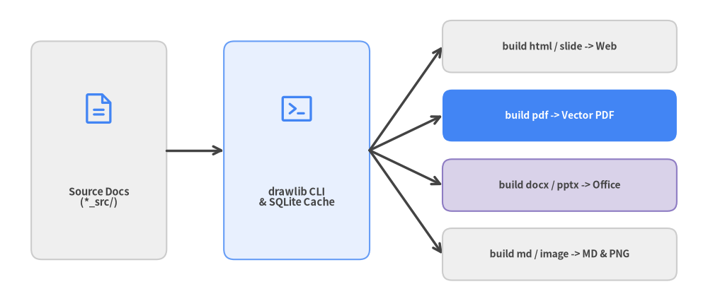
High-Performance Incremental Build Cache
Full documentation builds can contain dozens of diagrams. Drawlib avoids redundant compilation using a SHA-256 SQLite build cache (.drawlib/cache.db):
- Zero-Latency Repeat Builds: When a Markdown file or drawing script is compiled, Drawlib computes a SHA-256 hash of its code block, styles, and options. Unchanged diagrams are restored instantly from cache.
- Forced Rebuilds: Pass
--no-cacheto bypass the cache, or rundrawlib cache clear --imagesto purge cached illustrations.
13. AI Agent Collaboration & Autonomous Workflows
Drawlib was purposefully architected for the era of AI Pair Programming and Autonomous Coding Agents. While visual diagramming tools cannot be operated without complex UI automation, and raw matplotlib requires verbose plotting boilerplate, Drawlib's declarative Python API enables AI agents to generate, verify, and refine diagrams independently.
Why Drawlib is Optimized for AI Agents
- Deterministic Code Generation: Clean, semantic components (
ChevronProcess,Table,ArchitectureDiagram) prevent hallucinations and reduce coordinate math errors. - Unified Rules System (
drawlib rules show <topic>): Built-in, on-demand rule manuals give agents immediate reference for all library capabilities directly in their terminal environment. - Headless Verification Loop: Agents can render any code block into an image with a coordinate grid (
-g), visually inspect the output using multimodal vision tools, and self-correct layout flaws before showing the final result to the user.
The Autonomous AI Feedback Loop
Every AI coding agent generating Drawlib illustrations should follow this 5-stage self-correction cycle:
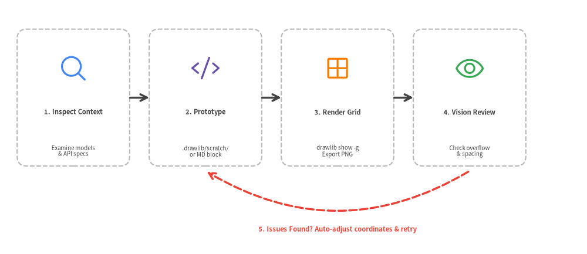
Self-Review Checklist for Agents
When reviewing a rendered illustration via image tools:
- Text Clipping: Verify text strings do not overflow shape boundaries.
- Perimeter Margins: Ensure elements do not touch the canvas boundary (maintain 5–10% perimeter margin).
- Line Endpoints: Check that arrowheads point accurately to target components without awkward intersections.
- High-Level Over Raw Primitives: Confirm that
SmartArtsorDiagramsare used rather than manually assembling dozens of raw rectangles and lines.
14. Project Scaffolding & Standard Templates
Drawlib enforces a clean, predictable project structure for all documentation and illustration repositories. Never construct project folders manually; always scaffold them using drawlib init project.
The 4 Standard Project Templates
| Template | Scaffold Command | Best Suited For | Output Deliverables |
|---|---|---|---|
doc |
drawlib init project doc |
Linear technical document, spec, RFC, or formal report | doc_src/ -> doc_html/, doc_en.pdf, doc_en.docx, doc_markdown/ |
site |
drawlib init project site |
Complete documentation website with sidebar navigation | docs_src/ -> docs_html/ & docs_markdown/ |
slide |
drawlib init project slide |
16:9 presentation slide deck (web, PDF & PowerPoint) | slide_src/ -> slide_html/, slide_en.pdf & slide_en.pptx |
images |
drawlib init project images |
Standalone Python drawing batch scripts | images_src/ -> images/ |
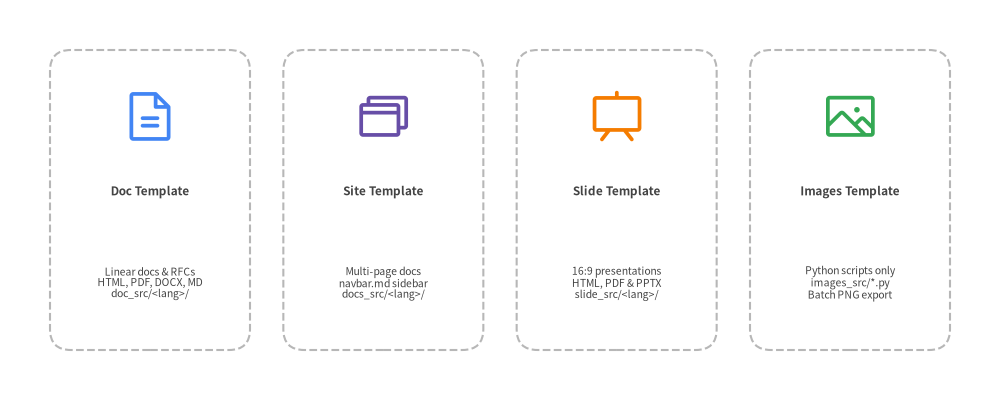
Standard Project Directory Architecture
Every Drawlib Markdown project (doc, site, slide) uses a unified drawlib.toml manifest and <lang>/ locale subdirectories (-l en or -l en,ja), adhering to strict source-of-truth isolation:
my_project/
├── docs_src/ # SOURCE OF TRUTH (Always edit here)
│ ├── drawlib.toml # Project manifest ([project] + [i18n])
│ ├── en/ # Locale content directory (add ja/ for i18n)
│ │ ├── index.md # Landing page (or 00_cover.md for doc)
│ │ ├── 01_overview.md # Chapter / section page
│ │ └── navbar.md # Sidebar navigation tree (for site template)
│ ├── _assets/ # Shared static logos & images
│ ├── styles.py # Custom project design tokens (optional)
│ ├── utils.py # Custom drawing helper macros (optional)
│ ├── template.html # HTML layout template (optional)
│ ├── style.css # Custom CSS styling (optional)
│ └── build.sh # Automated build launcher script
├── docs_html/ # GENERATED: Static HTML website (do not edit directly)
└── docs_markdown/ # GENERATED: Markdown with images for GitHub
Presentations with drawlib.slide
The slide template compiles 16:9 widescreen presentation decks (slide_src/<lang>/*.md) to an interactive web presentation (slide_html/<lang>/index.html), a vector PDF deck (slide_<lang>.pdf), and an editable MS PowerPoint deck (slide_<lang>.pptx):
# slide_src/utils.py
from drawlib.slide import current_slide
from drawlib.text import text
from drawlib.styles import Styles
def draw_slide_footer():
# Introspect page number and total count at draw time
page_text = f"{current_slide.page_number} / {current_slide.total_pages}"
text((1800, 45), text=page_text, style=Styles.Dark)
Dynamic Animations with drawlib.anim
Drawlib also natively supports generating looping animated diagrams (APNG and Animated WebP) using from drawlib.anim import Animation:
from drawlib.anim import Animation
from drawlib.canvas import setup
from drawlib.shapes import circle
from drawlib.styles import Styles
anim = Animation(file="pipeline_flow.webp", loop=0)
for step in range(3):
with anim.frame(duration=0.5):
setup(width=100, height=40)
circle((25 + step * 25, 20), radius=8, style=Styles.PrimaryFlat)
The Golden Rule of Source of Truth
Never edit generated output directories or deliverables (docs_html/, docs_markdown/, images/, slide_html/, *_<lang>.pdf, *_<lang>.docx, *_<lang>.pptx). All files in these outputs are automatically overwritten during compilation. Always edit files inside <base>_src/.
15. Best Practices & Architectural Checklist
Drawing effective architectural illustrations requires visual discipline, clear typographic hierarchy, and consistent color semantics. Follow these proven principles when designing with Drawlib.
1. Visual Hierarchy & Typography Scale
Establish an unambiguous reading order by adhering to a consistent text hierarchy:
| Hierarchy Level | Recommended Size | Recommended Style | Typical Placement |
|---|---|---|---|
| Diagram Title | 14–18 |
Styles.DarkBold |
Top of canvas or figure caption |
| Container / Boundary | 10–12 |
Styles.MutedBold |
Top-left of boundary boxes |
| Service / Node Title | 9–11 |
Styles.WhiteBold (or bold) |
Centered inside service cards |
| Subtitle / Tech Stack | 7.5–8.5 |
Styles.Dark (or Styles.Muted) |
Below node titles (fastapi / :8000) |
| Annotation / Metadata | 7–8 |
Styles.Muted |
Connector protocols, IP subnets |
2. Perimeter Margins & Spacing
Never place elements flush against the edges of the canvas. Maintain at least a 5% to 10% perimeter buffer around the canvas boundary. This ensures illustrations look polished in PDF page margins and responsive web viewports.
3. Semantic Color Discipline
Avoid arbitrary rainbow palettes. Use colors intentionally to communicate architectural roles:
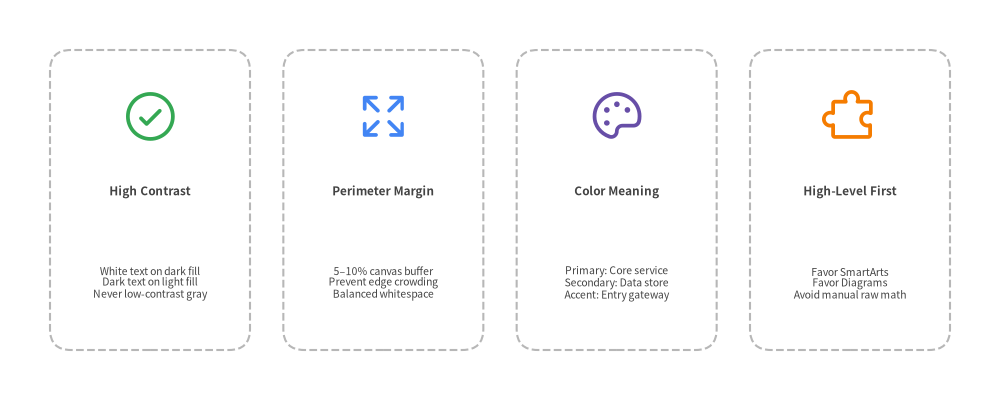
4. Semantic Coordinates Pattern (*_xy)
Avoid scattering raw coordinate literals (50, 25) or cryptic list indices (a[1]) across drawing calls. Define meaningful coordinate variables (e.g. client_xy = (25, 25), gateway_xy = (65, 25)) at the beginning of the block:
- Refactoring Resilience: Repositioning a node automatically updates both its shape and all incoming/outgoing connection lines.
- Self-Documenting Flows: Connectors read with immediate clarity:
line(client_xy, gateway_xy, arrow_head="->", style=Styles.DarkBold).
Summary Checklist for Production Blueprints
Before merging illustrations into production documentation:
- [ ] Explicit Imports: Does every
drawlibblock explicitly import all required symbols (e.g.from drawlib.styles import Colors, Styles)? - [ ] Explicit Naming: Does every block specify
file:<name>.pngfor deterministic referencing? - [ ] Semantic Coordinates: Are coordinates organized via named variables (
*_xy) rather than raw magic literals? - [ ] Aspect Ratio: Is the canvas
widthandheightproportioned to the diagram contents without wasted letterbox space? - [ ] Contrast Verification: Is text easily readable across dark (use
Styles.WhiteBold) and light (useStyles.Dark/Styles.DarkBold) backgrounds? - [ ] Neutral Connectors: Are standard flow connectors styled with
Styles.DarkBold, reserving colors strictly for semantic emphasis? - [ ] Connected Flows: Do connecting lines have directional arrowheads indicating data flow direction?
- [ ] Incremental Verification: Has the block been tested with
uv run drawlib show <file> <name.png> -g -o .drawlib/scratch/test.png?